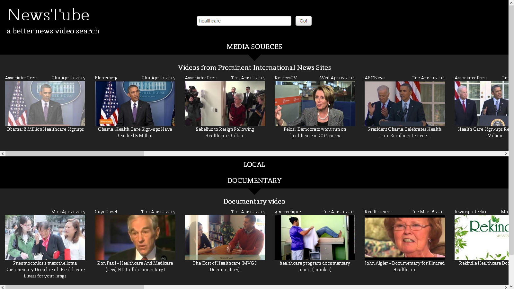
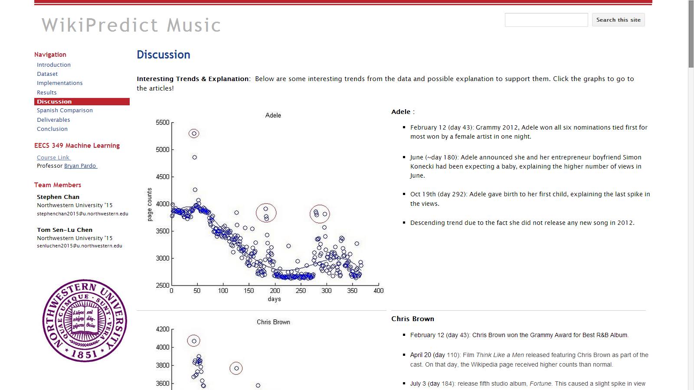

Newstube is a news video search interface designed for journalists to find relavent news video efficiently.
Built as part of the Northwestern Knight Lab,
more information can be found here
Technologies Used: Ruby on Rails, Youtube API, Twitter API
Technologies Used: Ruby on Rails, Youtube API, Twitter API

Wikipredict is a machine learning project that leaverage learning algorithm such as regression and neural net to predict future Wikipedia pages view counts. More
specifically, we looked at top musicians and artists and even looked at correlation with respective Spanish Wikipedia pages.
Extended paper can be found
here
Technologies Used: Matlab, Shell Script
Technologies Used: Matlab, Shell Script